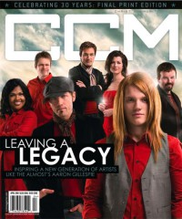

CMnexus: Contemporary Christian culture, music, and media.
|
|
CCM, Apr 2008, vol. 30, iss. 9
| Cover |
|---|
|  | | Writers in this Issue |
|---|
Allen, Nia
Argyrakis, Andy
Banister, Christina A.
Black, Beau
Conner, Matt
Connor, Lizza
Donehey, Mike
Dunn, Jason
Farias, Andree
Giglio, Louie
Hammitt, Mike
Harrold, Rachel
Havens, Josh
Lusk, Caroline
Maher, Matt
McCreary, David
Moist, Brad
Moore, Johnston
Newcomb, Brian Quincy
Peacock, Charlie
Schwab, Andrew
Shore, Tony
Styll, John W.
Thompson, John J.
Tworkowski, Jamie
Van Pelt, Doug
West, Matthew
|
Leaving A LegacyCover Feature:Article:What Now!:
- The Myriad by Brian Quincy Newcomb
- "In Memorandum" by John J. Thompson
Story Behind the Song:
- "Never Going Back To OK" by Josh Havens
New Noise:Roots:
- "Building Community In Cyberspace" by Johnston Moore
In The Studio:Things I ♥:In Review:The Final Word:
- "When All Is Said and Done" by Louie Giglio
Trend Watch:This is the final issue of CCM. Replaced by CCM Digital.
|